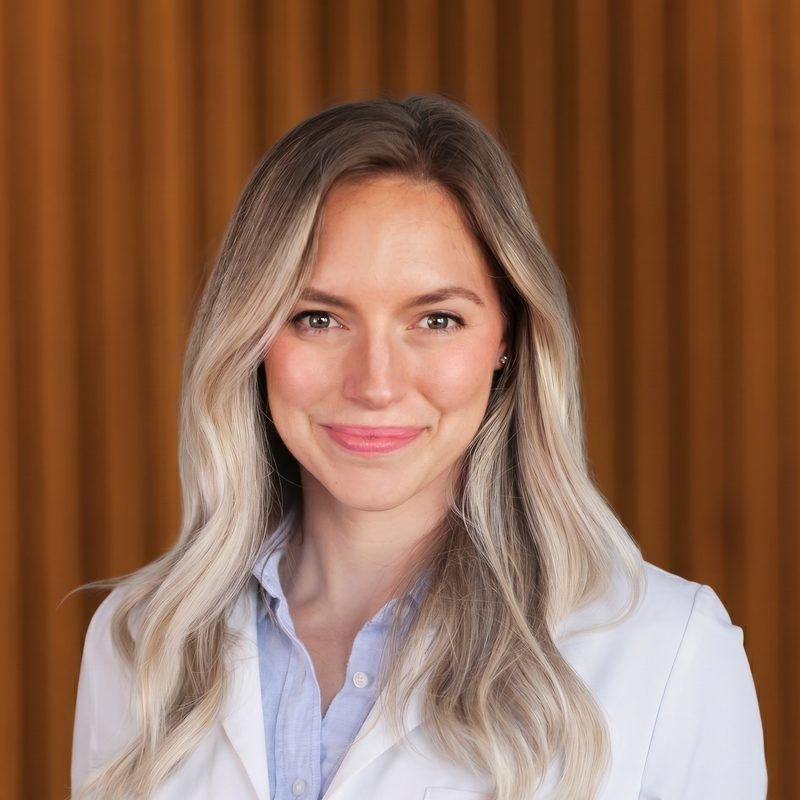
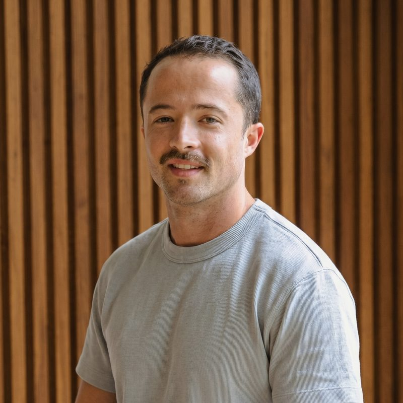

People who know you by name
A small team means real relationships — a direct line to your clinician, not a call center or a triage queue.

Ed O'Bryan, MD, MBA, CPE
Dr. O'Bryan has over 25 years clinical experience treating patients all over the world, from Africa to Central America to the US. He is very unique in that many of the infectious or inflammatory root causes of disease that are gaining visibility today he has treated first-hand for decades through his founding of the non-profit OneWorld Health. His passion is making patients healthy on an individualized basis while keeping access to the very best healthcare in the world affordable.
He received his M.D. at the Medical University of South Carolina, his M.B.A. at the University of Tennessee, is a Certified Physician Executive and member of the prestigious AOA Medical Honor Society. He is board certified in Internal Medicine, credentialed in Emergency Medicine, and maintains an Associate Professor of Medicine appointment at MUSC. He has extensive experience in rare autoimmune disease, tropical medicine, longevity, functional health and the traditional medical system and loves blending the best of these into one cohesive individualized plan built around his patients.
Kristen Toth, PA-C
Kristen bridges the gap between conventional clinical care and proactive health optimization. After beginning her career in the ER and successfully navigating her own complex health challenges with Hashimoto's and mold exposure, Kristen shifted her focus entirely to functional medicine — recognizing it as the premier path to long-term vitality.
At Contour, Kristen looks beyond the traditional model of mere symptom management. Instead, she utilizes a root-cause approach, analyzing your complete physiology — from advanced diagnostics and environmental factors to nervous system regulation. She works as a dedicated partner, building personalized plans grounded in precision functional medicine to help you achieve peak performance and lasting health.
Amanda Nichols, PA-C
Amanda Nichols, PA-C, brings 15 years of experience in emergency medicine to her practice, combining a strong foundation in traditional medicine with a personalized, whole-person approach to health. Her years in the ER have given her a unique perspective on acute illness and the importance of proactive care to prevent health concerns from becoming emergencies.
Amanda is a wife and mother of two and has spent the past 10 years immersed in the music industry alongside her touring musician husband. Her firsthand experience has given her a unique understanding of the demands of life on the road, and she is passionate about providing personalized, comprehensive care to individuals and families, with a particular interest in serving musicians, touring professionals, and others in the music industry.
Dorri Miller, NP
Dorri Miller is a board-certified Adult-Gerontology Nurse Practitioner with more than 30 years of nursing experience and a passion for helping adults achieve optimal health through personalized, evidence-based care. She believes the best healthcare begins by listening to each patient’s goals, understanding their unique needs, and developing individualized treatment plans that support long-term wellness.
Dorri specializes in medical weight management, metabolic health, hormone optimization, and longevity medicine. She is dedicated to providing compassionate, judgment-free care while helping patients achieve sustainable results through education, lifestyle modification, and advanced medical therapies when appropriate.
In addition to her role with Contour Health, Dorri is the owner of Holy City Wellness Center in South Carolina, where she provides wellness and aesthetic services with a focus on helping patients look and feel their best. Her extensive clinical experience allows her to blend medical expertise with a personalized approach that emphasizes safety, education, and lasting patient relationships.
Dorri is committed to empowering her patients to take an active role in their health and considers it a privilege to partner with them on their journey toward improved wellness and quality of life.
Megan Tomlin, RD
Megan helps bridge the gap between functional and clinical nutrition, combining science, compassion, and real-life strategies to help you feel your best from the inside out. She is a registered dietitian who empowers clients to optimize their daily lives without compromising or wasting time. Whether you're looking to optimize your energy, health, or daily habits, Megan is here to make it simple, sustainable, and even delicious.

Kristin Cunningham, NP
Kristin Cunningham is both a conventionally trained Nurse Practitioner and a functional medicine specialist with a passion for root-cause healing. She completed her undergraduate education at Johns Hopkins University and graduate training at Georgetown University. She began her career in family medicine and cardiology before discovering functional medicine.
With over 10 years of clinical experience, Kristin now specializes in helping teens and adults resolve acne and other skin conditions naturally by addressing the sources of underlying imbalances. Rather than relying solely on topical treatments or temporary fixes, her approach combines evidence-based medicine with functional medicine principles to create personalized, sustainable paths to clear skin and better overall health.
Kristin is a mother of five — including three teens and two toddlers — and lives with her family in Mount Pleasant. Faith and family are the center of her life, and she is an active member of their church and leads several women's gatherings.

Ayden Rupp
Ayden brings a grounded, service-first approach to every interaction. With a Health Coaching Certificate from the Institute for Integrative Nutrition and as a certified yoga instructor, Ayden entered the health and wellness field in 2024 with a clear mission: make optimal health feel accessible, not overwhelming.
Ayden's coaching philosophy centers on simplicity and accountability. Whether guiding patients through lifestyle shifts or supporting their care journey from first contact, Ayden believes that lasting transformation happens when healthy living feels achievable — not like a second job. Expect honest conversations, firm support, and a curated experience designed to meet you where you are and move you toward your highest potential.
Chandler Rollins
Chandler is passionate about making every patient feel comfortable, heard, and cared for. With a friendly and compassionate approach, she strives to make each patient interaction a positive experience. She loves being able to combine her clinical skills with her passion for helping others and is proud to be part of a team focused on personalized, patient-centered care.